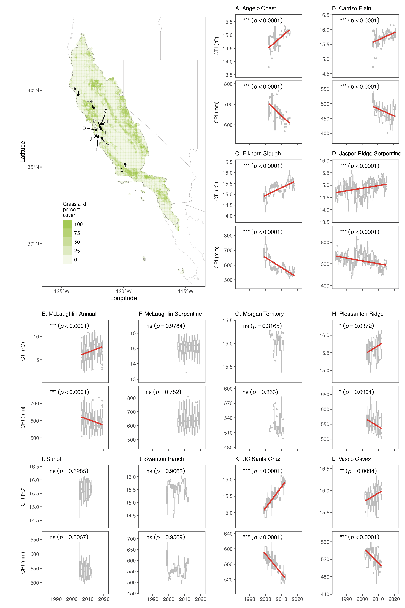
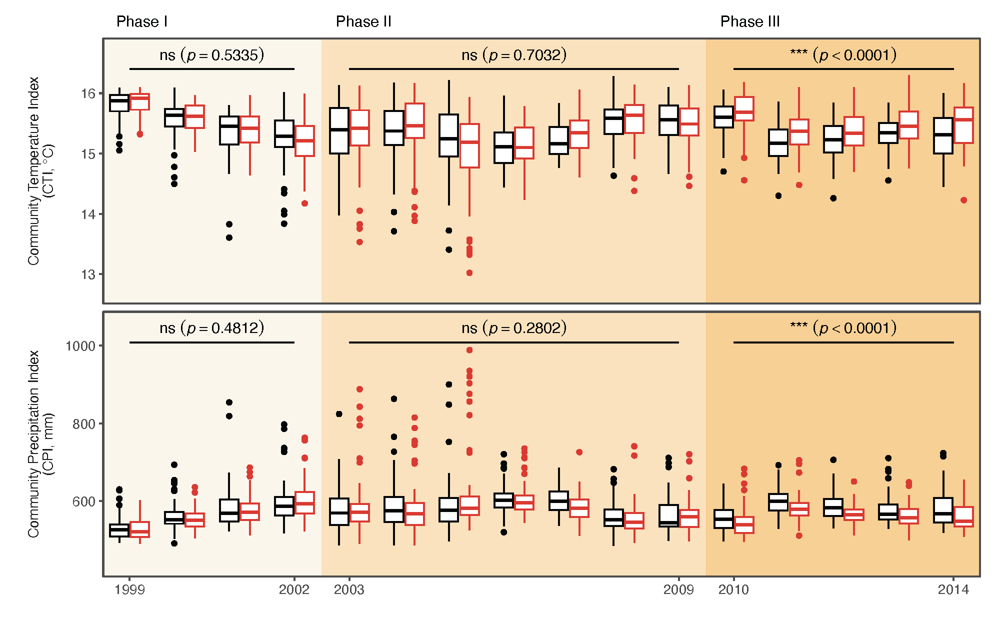
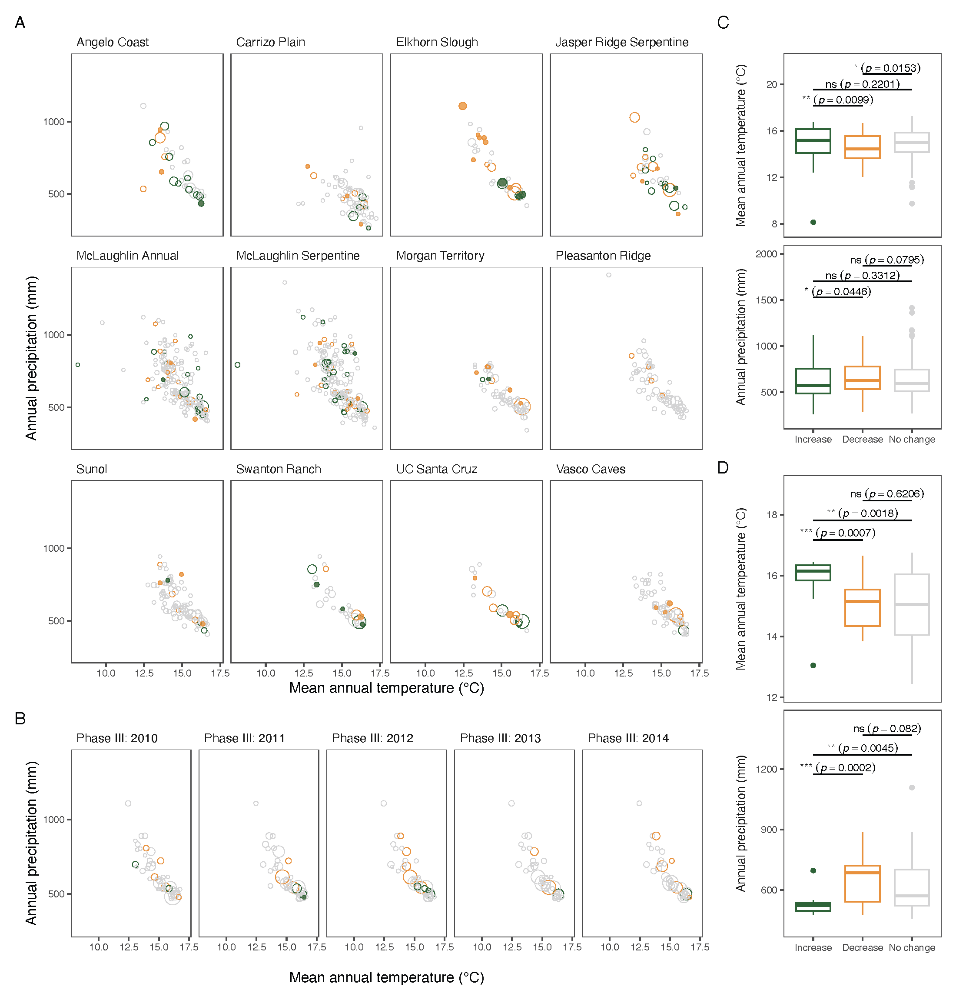
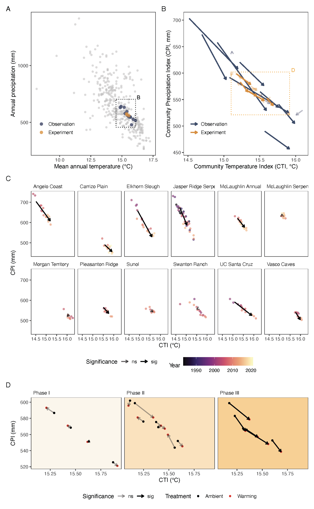

Highlights
- We compiled data on the composition of grassland communities in the California Floristic Province from long-term observations and global change experiments.
- We characterized community compositional change in the climatic niche space.
- Grassland communities shifted toward species associated with warmer and drier conditions at rates comparable with those of climate change.
- The shifts were consistent across observational and experimental studies.
- The rapid responses of grassland communities contrast with the lagged responses of forest communities, indicating unique threats to grassland biodiversity.
Abstract
Many terrestrial plant communities, especially forests, have been shown to lag in response to rapid climate change. Grassland communities may respond more quickly to novel climates, as they consist mostly of short-lived species, which are directly exposed to macroclimate change. Here we report the rapid response of grassland communities to climate change in the California Floristic Province. We estimated 349 vascular plant species’ climate niches from 829,337 occurrence records, compiled 15 long-term community composition datasets from 12 observational studies and three global change experiments, and analyzed community compositional shifts in the climate niche space. We show that communities experienced significant shifts toward species associated with warmer and drier locations at rates of 0.0216 ± 0.00592 ℃ yr–1(mean ± std. err.) and –3.04 ± 0.742 mm yr–1, and these changes occurred at a pace similar to climate warming and drying. These directional shifts were consistent across observations and experiments. Our findings contrast with the lagged responses observed in communities dominated by long-lived plants and suggest greater biodiversity changes than expected in the near future.
Estimates of species’ climatic niches

Observational and experimental evidence of community shifts


Analysis and synthesis of community shifts

